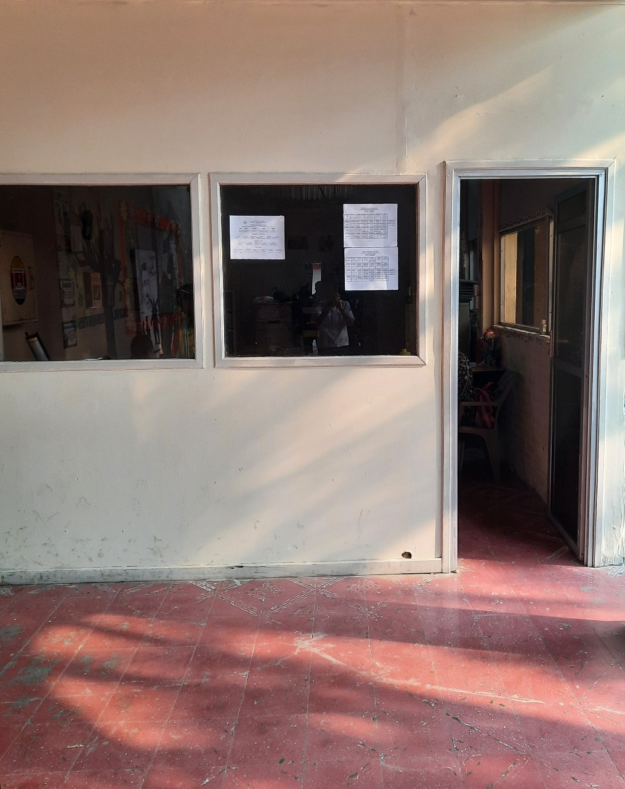
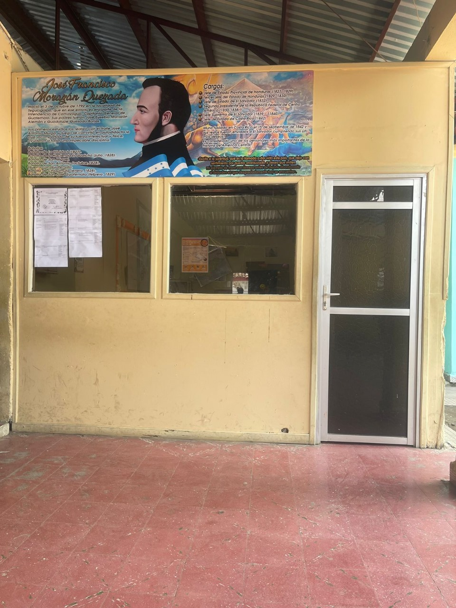

El área de dirección es responsable de supervisar y dirigir todas las actividades y recursos de la organización para lograr los objetivos y metas establecidos. Toma de decisiones: La direccion es responsable de tomar decisiones importantes para la institución, Como la selección de nuevos proyectos, la inversión en nuevas tecnologias, Comunicación: La direccion es responsable de mntener una buena comunicación entre los diferentes departamentos de la institucion y de asegurarse de que los objetivos de la institucion sean claros para todo el personal. Tambien puede ser responsable de mantener relaciones positivas con los clientes, proveedores y otras partes interesadas.
Imagen que sobresale
Consejeria

El área de consejeria es responsable de proporcionar un ambiente seguro, de apoyo y confidencial para ayudar a los estudiantes a enfrentar los desafios emocionales y academicos que pueden tener durante su tiempo en la institucion. Asesoramiento academico: los consejeros pueden trabajar con los estudiantes para abordar problemas academicos, como la gestion del tiempo, la planificación de carrera y la selección de cursos.
Imagen que sobresale
Orientación

Asesoramiento academico: ayudar a los estudiantes a planificar sus estudios, elegir cursos y manejar dificultades academicas. Orientación vocacional y profecional: brindar informacion sobre opciones educativos y carreras, ayudando a los estudiantes a tomar deciciones informadas sobre su futuro profecional. Apoyo personal y emocional: ofrecer asistencia para resolver problemas personales, emocionales y sociales que pueden afectar el rendimiento academico Transición educativa: facilitar la transición de los estudiantes entre niveles educativos y ayudar en el proceso de solicitud y adaptación a nuevos entornos educativos.